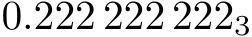

Contents
Summary
The command
\digits
typesets a number
Settings
Settings string
Description
The command
\digits
typesets a number. It listens to two specific settings to control the use of commas, periods, or spaces for the separation between thousands and fractions.
See the example for the explicit setup required. The digit modes and orders have the same meaning as the method and order keys in \setupunits.
Examples
Example 1
-
\startlines 10 \setdigitmode {1} \setdigitorder{0} \digits {12,345.90} 20 \setdigitmode {2} \setdigitorder{0} \digits {12,345.90} 30 \setdigitmode {3} \setdigitorder{0} \digits {12,345.90} 40 \setdigitmode {4} \setdigitorder{0} \digits {12,345.90} 50 \setdigitmode {5} \setdigitorder{0} \digits {12,345.90} 60 \setdigitmode {6} \setdigitorder{0} \digits {12,345.90} 11 \setdigitmode {1} \setdigitorder{1} \digits {12,345.90} 21 \setdigitmode {2} \setdigitorder{1} \digits {12,345.90} 31 \setdigitmode {3} \setdigitorder{1} \digits {12,345.90} 41 \setdigitmode {4} \setdigitorder{1} \digits {12,345.90} 51 \setdigitmode {5} \setdigitorder{1} \digits {12,345.90} 61 \setdigitmode {6} \setdigitorder{1} \digits {12,345.90} \stoplines
-

Example 2
-
\setdigitmode{4} \setupbodyfont[20pt] $\digits{0.222,222,222}_3$
- 